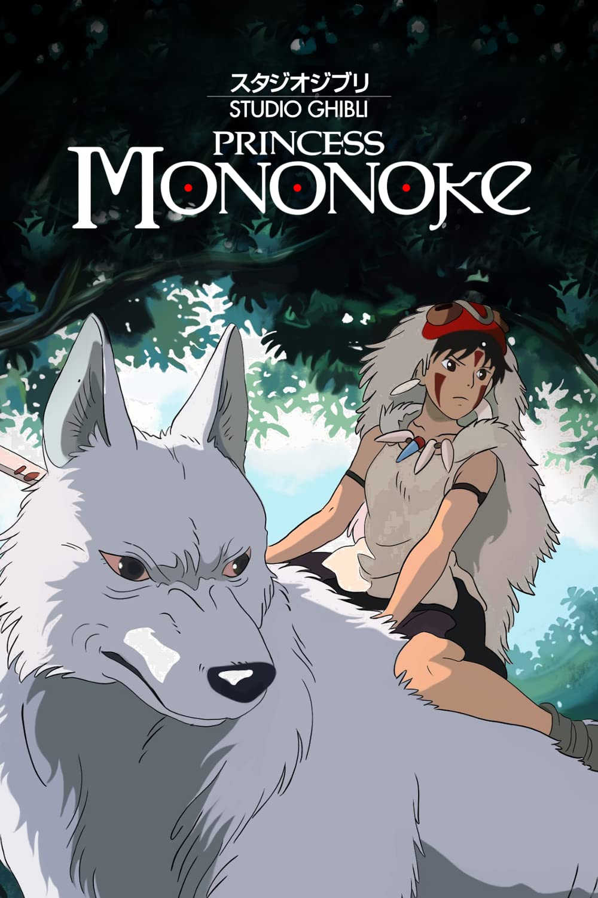

Andrew Alicea Virtual Museum Exhibit Section
- Exhibit One - Valley Hands
"Valley Hands" is a drawing done with watercolor, fine art marker, and pen by artist Sarbani Ghosh.
The piece "Valley Hands" Illustrates the dichotomy and balance between man's need for civilization and nature.
I came across the artwork "Valley Hands" when I was writing my thematic essay. I viewed the piece as Civilization and nature being forever intertwined. One hand depends on the use of resources from the other hand while the other hand depends on the reduction of hazards for its survival and well-being.
- Exhibit Two - Xerces Blue Butterfly Statue
Xerces Blue Butterfly Statue was erected in honor of the now extict Xerces Blue Butterfly by an Unknown Artist.
Xerces Blue Butterfly was erected on top of an old monument on the night before the fifty-third annual Earth Day in Golden Gate Park, San Francisco. The plaque on the statue reads "Driven to extinction by urban development and the destruction of the sand dunes of the San Francisco Peninsula.".
The extinction of the Xerces Blue Butterfly is the result of its habitat being destroyed by development in the sand dunes of Sans Francisco.
- Exhibit Three - Forest Clearance in Indonesia
- Exhibit Four - Princess Mononoke
- Exhibit Five - Hedda Gabler
- Exhibit Six - "Story of a Flower","To Whom This May Concern...", and "My friend"
Forest clearance in Indonesia is a photograph taken by Ulet Ifansasti/Greenpeace.
The photograph was taken to show the impact of deforestation on animals. Just viewing this photograph of miles of forest clearance in Indonesia is truly jaw-dropping. This photograph is but a small glimpse of what is happening around the world. Nature is being destroyed at a rate ten times higher than the average over the past ten years.
Princess Mononoke is a Japanese animated film released on December 19, 1997 written and directed by Hayao Miyazaki and animated by Studio Ghibli.
Princess Mononoke touches on the importance of maintaining a balance with nature and never letting the greed to use its resources corrupt you. The film centers on Ashitaka’s journey to undo a curse inflicted upon him by a demon-possessed boar. Princess Mononoke features a beautiful forest ruled by forces outside of human understanding that seemingly give and take life on a whim. The film isn’t as much about how we shouldn’t kill trees as it is about the complicated nature of the relationship between humans and nature.
Hedda Gabler is a play written by Norwegian playwright Henrik Ibsen. The world premiere was staged on 31 January 1891 at the Residenztheater in Munich.
The main character Hebba is the daughter of a famous general and goes by her maiden name despite being married. She is jealous of a younger woman and her influence on her husband. I feel that Hebba feels internalized misogyny from society and constantly wants power and freedom. She wishes she was born a man and feels frustrated watching weaker-minded people holding power over her due to being a man, which reflects perfectly what things may have been like in the 1800s. Hebba is both an idealistic victim and a manipulative villain. This topic and the feelings of Hebba are still relevant in today's world, with characters of this nature still popping up in today's media.
I watched this play as part of our Week nine module which focused on the creative work Theater. After watching the play and summarizing my thoughts on the play I compared the character of Hedda to Cersei Lannister from the HBO Show Game of Thrones. Hedda is not as extreme as Cersei Lannister but both characters share the same traits such as being beautiful, manipulative, and what some would consider past their "prime" characters unhappily married to flawed men.
"Story of a Flower","To Whom This May Concern...", and "My friend" are three pieces of poetry written by Nicole Buell.
I wrote my Creative Column Article on these three pieces of poetry by my wife. These pieces of poetry are not famous or well-known but spoke to me enough for me to write my creative column and explore the meaning behind these pieces of poetry.
When I interviewed Nicole for my Creative Column Article she stated that "The only way I knew how to vent was through writing and drawing".
When I asked Nicole about her Creative Process when writing poetry her response was “Whenever I write poetry I always have a very overwhelming amount of emotion so I would just write what I’m feeling onto the paper and I would kind of look at it afterward and then I would tweak it and look for better wording and how to make the words flow better and just try to find better… um, like looking in a thesaurus to find words that give more meaning and flow and give the poem an overall different tone than how it might have first come out of my mind.”